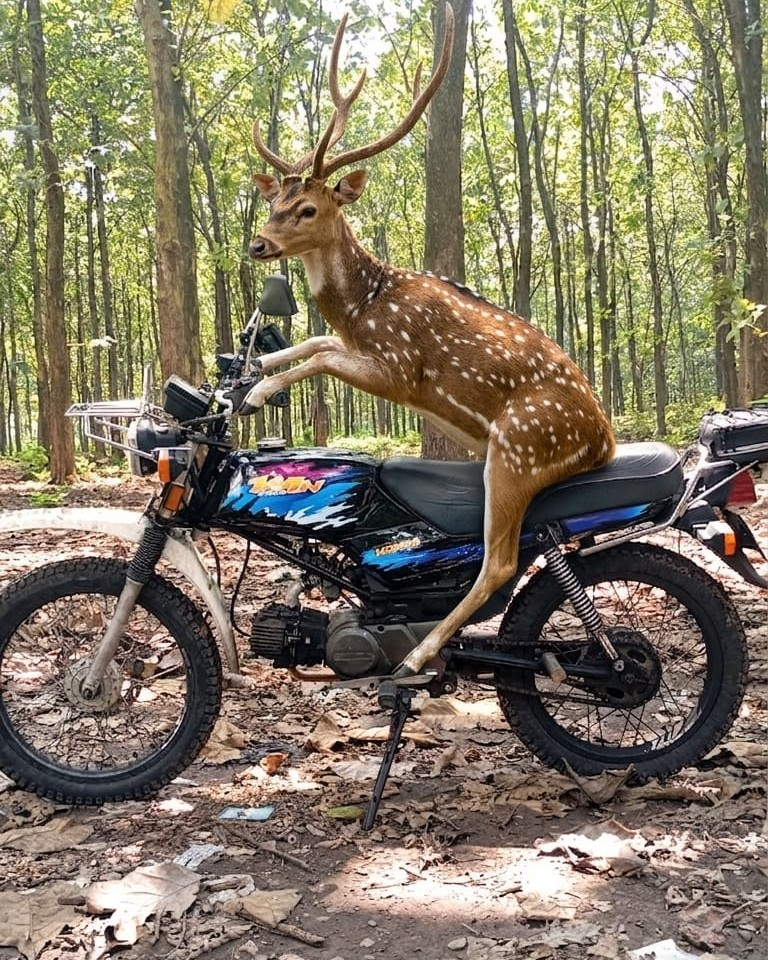

Honda Win 100
Honda Win 100 adalah motor bebek kopling legendaris yang rilis di Indonesia pada 1984. Awalnya dikenal sebagai motor operasional dinas (seperti pegawai pos dan polisi), kini Honda Win beranjak jadi motor kalcer dan ikonik yang dicari para pencinta restorasi serta custom.
